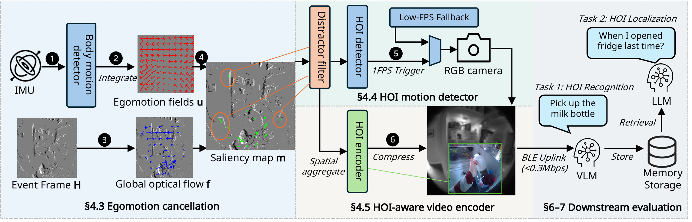
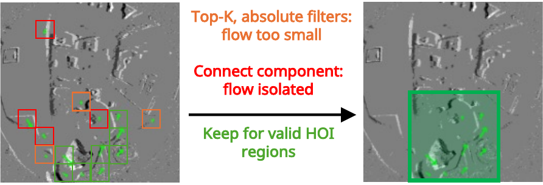
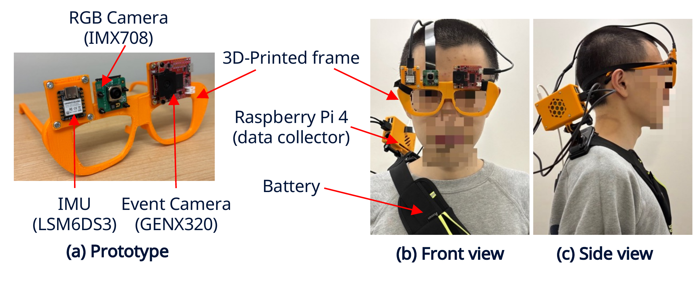
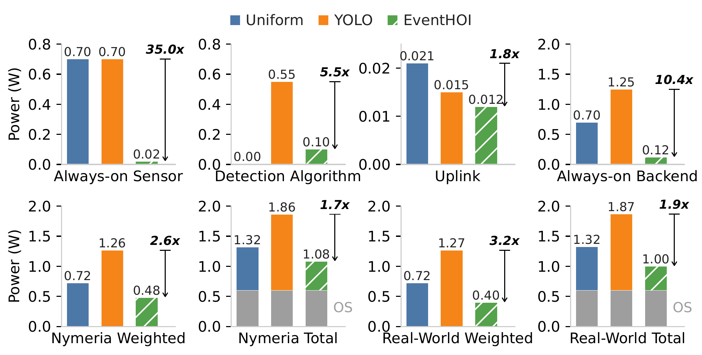
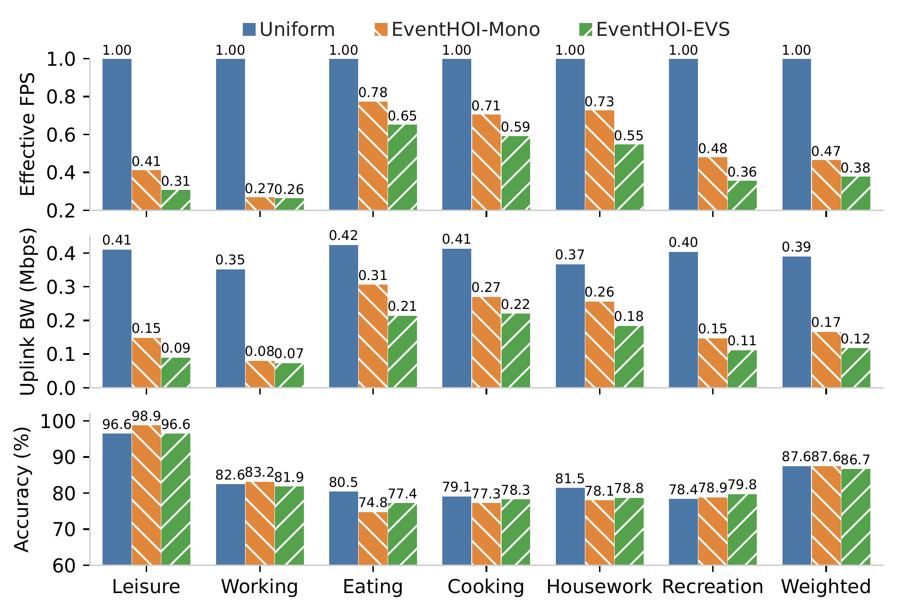

EventHOI: Event-Driven Energy-Efficient Hand-Object Interaction Logging on Smartglasses
Anonymous Authors
5.8–10.4×lower always-on backend power
3.0×lower uplink bandwidth
1.5–3.8×fewer RGB frames captured
<1%HOI recognition accuracy loss
Abstract
Hand–object interactions (HOIs) are fundamental units of everyday human activities, capturing how people
manipulate objects during daily routines. Automatically logging these interactions from an egocentric
perspective can provide time-stamped evidence of daily actions, enabling applications such as memory
assistance. However, practical HOI logging on smartglasses remains challenging because continuous RGB capture
and wireless transmission exceed wearable energy and bandwidth budgets.
We present EventHOI, an event-driven HOI detection and compression system that enables
energy-efficient RGB sampling and HOI-aware encoding on smartglasses while preserving downstream HOI logging
performance. EventHOI uses low-power event sensing as an always-on sentinel to detect HOI motions and trigger
RGB sensing only when HOIs likely occur. A lightweight IMU-based egomotion cancellation pipeline suppresses
spurious head-induced events. EventHOI further identifies HOI saliency regions from residual events to guide
spatial–temporal compression for efficient transmission and VLM-based HOI logging.
We build a smartglasses prototype, implement the end-to-end pipeline, and collect 10 hours of real-world
data across multiple users, activities, and environments. On this real-world testbed and a 50-hour egocentric
dataset, EventHOI reduces always-on backend power by 5.8–10.4×, uplink bandwidth by 3.0×, and RGB capture
by 1.5–3.8× compared to RGB-only baselines, with minimal HOI recognition accuracy loss.
How EventHOI works

System overview.
1 Egomotion cancellation
Head motion makes the whole event frame light up even when nothing is touched. EventHOI integrates the
gyroscope into a rotation-induced motion field and subtracts it from the event optical flow, so the
residual flow isolates hand–object interaction.
2 HOI detection
Magnitude (top-k, absolute) and connected-component filters remove background distractions such
as lighting changes and bystanders. The denoised HOI map triggers the RGB camera at 1 FPS only
while an interaction is under way, with a low-FPS fallback.
3 HOI-aware compression
The same map marks where the hands interact. The encoder keeps that region and compresses the rest, so
frames fit a Bluetooth Low Energy uplink (< 0.3 Mbps) to a cloud VLM for HOI logging.

Applying the filters to residual optical flow. Orange: flow too small (top-k and absolute
filters); red: isolated flow (connected components); green: kept as the HOI region.
Prototype and dataset

Smartglasses prototype for data collection: (a) the glasses, (b) front and (c) side views when worn.
The prototype carries an RGB camera, an event camera, and an IMU on a 3D-printed frame, with a Raspberry Pi 4
collecting the data. With it we recorded a 10-hour real-world dataset of daily activities: working, cooking,
leisure, recreation, housework, and eating. We also evaluate on a 50-hour egocentric dataset.
Results

Power consumption breakdown. Always-on backend: 0.70 W (Uniform), 1.25 W (YOLO),
0.12 W (EventHOI).

Effective FPS, uplink bandwidth, and HOI accuracy per scenario on the real-world testbed.
BibTeX
@inproceedings{eventhoi,
title = {EventHOI: Event-Driven Energy-Efficient Hand-Object Interaction Logging on Smartglasses},
author = {Anonymous Authors},
note = {Under review}
}